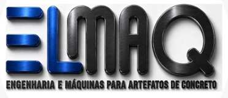

Dosagem
Armazenamento, alimentação e controle do material.

Solicitar análiseEngenharia para artefatos de concreto
Máquinas reais, automação aplicada e engenharia construída para elevar produtividade, precisão e confiança.

01 / Fluxo de produção
Uma sequência integrada para transformar equipamento em resultado, dimensionada conforme área, produto e meta diária.
Armazenamento, alimentação e controle do material.
Homogeneidade do traço com construção industrial robusta.
Precisão, repetibilidade e compactação aplicada.
Movimentação e organização do produto com segurança.
02 / Linhas de produção
Configurações integradas para dosagem, mistura, moldagem e paletização trabalhando de forma coordenada.

Linha automatizada E4000
Metas sujeitas à validação técnica conforme traço, produto, equipe, manutenção e condições de operação.
Linha automática E5000

Linha integrada E6000
03 / Automação e paletização
Automação desenvolvida, testada e aplicada para aumentar repetibilidade, simplificar a operação e trazer previsibilidade ao processo.
Organização e movimentação do produto final.
Comandos claros para ajuste e acompanhamento.
Validação de funcionamento no equipamento.
Medição, identificação e conferência.
04 / Dosagem e mistura
Central robusta e automatizada para armazenar, dosar e transportar agregados e cimento com agilidade, repetibilidade e confiabilidade.

05 / Engenharia, segurança e suporte
Princípios gerais de projeto e mitigação técnica de riscos.
Barreiras, proteções e intertravamento de segurança.
Dimensionamento estrutural contra fadiga em movimentação de cargas.
06 / Eficiência energética
Solução dedicada à melhoria do uso da energia e redução de perdas na instalação industrial.
Minimiza multas por reativo e reduz perdas na rede.
Melhora o rendimento dos equipamentos e da instalação.
Componentes de qualidade e proteção adequada.
Controle automático para performance contínua.
07 / Implantação e integração
Equipamento real, implantação orientada e suporte para transformar tecnologia em produção.
08 / Fale com a ELMAQ
Fale com a ELMAQ para validar o equipamento, a configuração e o layout mais adequados à realidade da sua fábrica.
CNPJ 25.434.783/0001-42
R. Doná Andica, 89 - Jardim Vitória
Belo Horizonte - MG, 31970-130